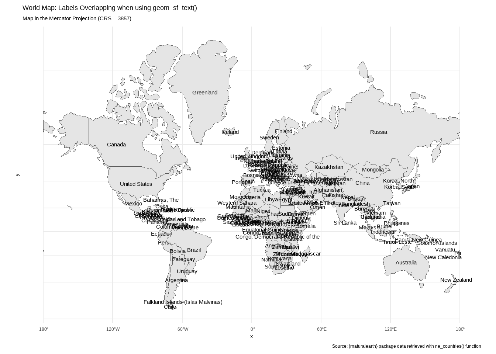
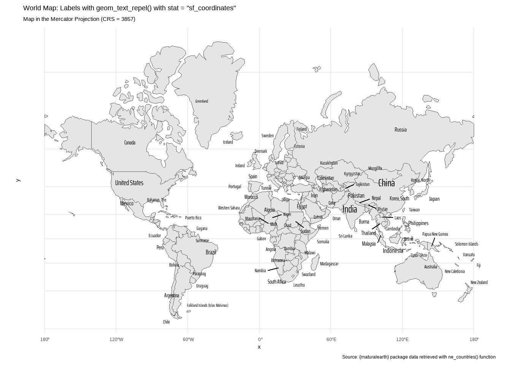
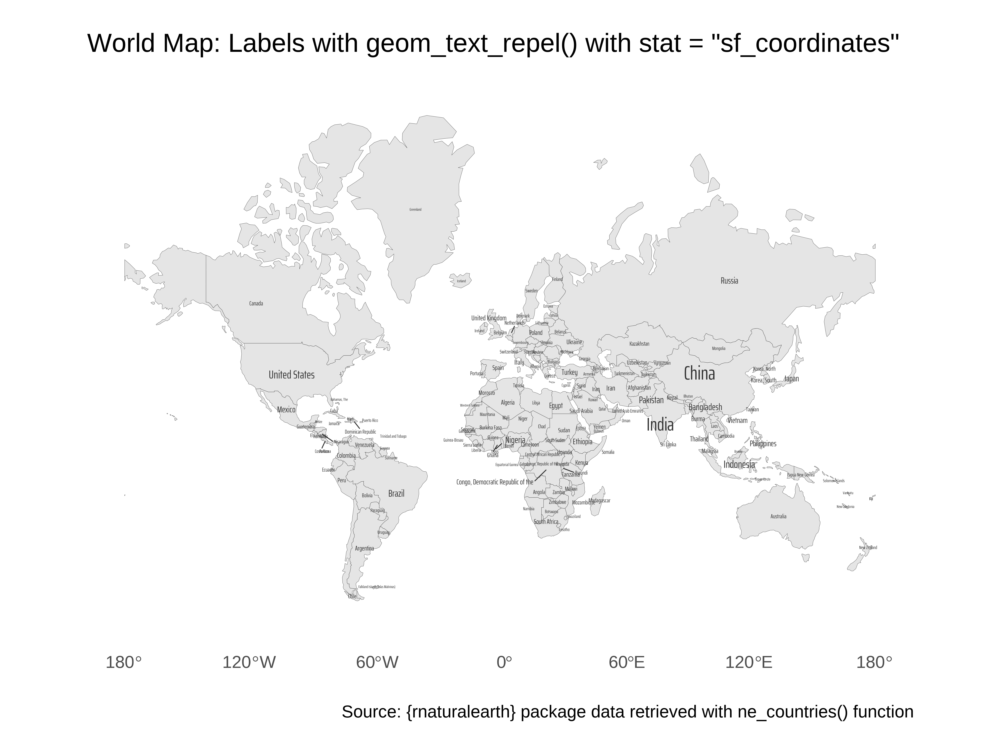

3 types of Cartograms in R with {sf} and {cartogram}
Creating Cartograms – contiguous, non-contiguous and packed-circles – in R with {cartogram}, and making non-overlapping text annotations in maps, and custom callouts in Quarto.
Author
Aditya Dahiya
Published
October 25, 2024
Introduction
On this webpage, we’ll explore how to create cartograms in R, using population data from the CIA World Factbook. Cartograms are a unique type of thematic map that reshape geographic regions to represent data variables rather than their actual geographic area. By resizing areas to reflect variables like population, cartograms reveal spatial patterns and disparities in a more visually striking way, making them a powerful tool for storytelling with data.
Unlike traditional maps, where region size is based solely on geographical area, cartograms alter these sizes to communicate insights about underlying data trends. This approach offers several advantages: it enhances visualization by making patterns more apparent, communicates complex data to a broad audience effectively, and highlights disparities between regions, drawing attention to areas of interest. Additionally, cartograms facilitate comparative analysis by allowing viewers to easily compare regions resized according to a single variable.
Dorling cartograms (Figure 4) that represent regions as resized circles,
Contiguous area cartograms (Figure 2) that maintain topological relationships between regions, and
Non-contiguous area cartograms (Figure 3) that allow flexibility in resizing by ignoring boundaries.
About the Data
The dataset used in this tutorial is sourced from the CIA World Factbook, specifically the Country Comparisons from 2014. This resource provides essential statistics on population, area, and other key indicators for 265 global entities. Through the {openintro} and {usdatasets} R packages, we access population metrics that allow us to create cartograms—maps where countries’ sizes are distorted according to population values rather than geographic area. This dataset, which required no additional cleaning, enables the visualization of demographic distributions, highlighting countries’ population density and size in an intuitive way for mapping exercises in R.
Key Learnings
Creating Cartograms with {cartogram}, such as contiguous, non-contiguous, and Dorling cartograms to visually communicate data through shape transformations.
Custom Callouts in Quarto with the Custom Callout Extension, which enhances document structure and readability, such as the present call-out.
Repelling Overlapping Text Labels with {ggrepel} with geom_sf() and geom_sf_text() for improved clarity on maps.
Step 1: Getting libraries and raw data
In this step, we are setting up our workspace to create a population-based cartogram using data from the CIA World Factbook. We begin by loading essential libraries, including {tidyverse} for data manipulation and visualization, {sf} for handling spatial data, and {cartogram} for creating cartograms. We load the cia_factbook dataset and use the {countrycode} package to add ISO3 country codes for mapping. The world_map object is created using the {rnaturalearth} package, which provides geographic data in sf format. Additionally, we set up custom fonts using {showtext} and define color palettes for filling and labeling countries, enhancing the map’s readability and aesthetic.
Code
# Load essential librarieslibrary(tidyverse) # For data wrangling and visualizationlibrary(sf) # For handling spatial objects in Rlibrary(ggrepel) # For repelling overlapping labels in plotslibrary(cartogram) # For creating different types of cartogramslibrary(showtext) # For using custom Google Fonts in plots# Load and prepare the CIA Factbook datacia_data <- openintro::cia_factbook |>mutate(# Convert country names to ISO3 codes for easy matching with # Geographical Maps dataiso_a3 = countrycode::countrycode(country, "country.name", "iso3c") )# Retrieve the world map dataworld_map <- rnaturalearth::ne_countries(scale ="small", # Use small scale for manageable detailreturnclass ="sf"# Return as an 'sf' object for spatial handling )# Add a custom Google font for captionsfont_add_google("Saira Extra Condensed", "caption_font")showtext_auto() # Automatically apply custom fonts# Display the size of the world_map object in KB# object.size(world_map) |> print(units = "Kb")# Define colors for country fill and text# Fill color palette for countriesfill_palette <- paletteer::paletteer_d("khroma::stratigraphy")# Define a darker color palette for text labelscolour_palette <- fill_palette |>str_sub(start =1, end =7) |># Truncate hex codes to 6 characters colorspace::darken(0.5) # Darken colors by 50% for better contrast
Step 2: Converting the data into a “tidy” tibble.
In this code snippet, we refine the world_map data and visualize it in the Mercator projection using the ggplot2 package. We start by selecting relevant columns, grouping by country name, and keeping the entry with the highest population estimate for countries with multiple entries. After joining this map data with the cia_data dataset, we filter out any countries without population data and apply the Pseudo-Mercator projection (CRS 3857) using {sf}’s st_transform() function. Finally, we use ggplot2 to plot the world map with geom_sf() and set a minimal theme and informative title and caption.
Code
# Filter, join, and transform world map data for plottingworld_map <- world_map |>select(name, geometry, pop_est, iso_a3) |># Select relevant columnsgroup_by(name) |># Group by country nameslice_max(order_by = pop_est, n =1) |># Retain country entry with max population estimateleft_join(cia_data) |># Join with CIA Factbook datafilter(!is.na(population)) |># Filter out entries without population datast_transform(crs =3857) # Transform to Psuedo-Mercator projection (CRS = 3857)# Print world_map object to the consoleworld_map |>print()
Table 1: The sf object morld map to be used in the susequent analysis
Simple feature collection with 171 features and 14 fields
Geometry type: MULTIPOLYGON
Dimension: XY
Bounding box: xmin: -20037510 ymin: -7481527 xmax: 20037510 ymax: 18440000
Projected CRS: WGS 84 / Pseudo-Mercator
# A tibble: 171 × 15
# Groups: name [170]
name pop_est iso_a3 geometry country area birth_rate
* <chr> <dbl> <chr> <MULTIPOLYGON [m]> <fct> <dbl> <dbl>
1 Afghanist… 3.80e7 AFG (((7404817 4489796, 7466… Afghan… 6.52e5 38.8
2 Albania 2.85e6 ALB (((2339940 4989172, 2337… Albania 2.87e4 12.7
3 Algeria 4.31e7 DZA (((-966743 3173002, -964… Algeria 2.38e6 24.0
4 Angola 3.18e7 AGO (((1446654 -532848.7, 14… Angola 1.25e6 39.0
5 Argentina 4.49e7 ARG (((-7640303 -6916018, -7… Argent… 2.78e6 16.9
6 Armenia 2.96e6 ARM (((5176993 4688866, 5136… Armenia 2.97e4 13.9
7 Australia 2.54e7 AUS (((16440693 -4984101, 16… Austra… 7.74e6 12.2
8 Austria 8.88e6 AUT (((1890168 6127425, 1881… Austria 8.39e4 8.76
9 Azerbaijan 1.00e7 AZE (((5165775 5140132, 5197… Azerba… 8.66e4 17.0
10 Bahamas 3.89e5 BHS (((-8792013 3097259, -87… Bahama… 1.39e4 15.6
# ℹ 161 more rows
# ℹ 8 more variables: death_rate <dbl>, infant_mortality_rate <dbl>,
# internet_users <dbl>, life_exp_at_birth <dbl>,
# maternal_mortality_rate <int>, net_migration_rate <dbl>, population <int>,
# population_growth_rate <dbl>
Key Learning: Using geom_text_repel() in place of geom_text_sf() with stat = "sf_coordinates"
In this code, we generate two versions of a world map using the Mercator projection (CRS = 3857). The first plot demonstrates how using geom_sf_text() without any adjustment can lead to overlapping labels, particularly in densely populated areas. The second plot corrects this with geom_text_repel() from the {ggrepel} package (Slowikowski 2024), which dynamically adjusts label positions to prevent overlap and improve readability. Each map includes labels based on country name, and the label sizes vary by population, offering a clear contrast between the two approaches for displaying map text labels.
Code
# Plot the transformed world map data with overlapping labelsggplot(world_map) +# Draws the base map with country shapesgeom_sf() +# Adds country names as labels, without overlap preventiongeom_sf_text(mapping =aes(label = country ) ) +# Applies a minimal theme for a clean visual layouttheme_minimal() +# Sets title, subtitle, and caption for the plotlabs(title ="World Map: Labels Overlapping when using geom_sf_text()",subtitle ="Map in the Mercator Projection (CRS = 3857)",caption ="Source: {rnaturalearth} package data retrieved with ne_countries() function" )# Plot the transformed world map data with repelled labelsggplot(world_map) +# Draws the base map with country shapesgeom_sf() +# Adds country names as labels with repel effect to prevent overlapgeom_text_repel(mapping =aes(label = country,geometry = geometry,size = population ),stat ="sf_coordinates", # Sets the stat for spatial coordinatesfamily ="caption_font", # Sets the font family for labelslinewidth =0.01# Sets line width for label positioning ) +# Scales the size of labels based on populationscale_size_continuous(range =c(3, 7) ) +# Applies a minimal theme for a clean visual layouttheme_minimal() +# Sets title, subtitle, and caption for the plotlabs(title ="World Map: Labels with geom_text_repel() with stat = \"sf_coordinates\"",subtitle ="Map in the Mercator Projection (CRS = 3857)",caption ="Source: {rnaturalearth} package data retrieved with ne_countries() function" ) +# Removes the legend for sizetheme(legend.position ="none" )

(a) Basic World Map: With no effort to prevent overlapping of labels

(b) Labels Repelled from each other to prevent overlapping, using geom_text_repel() from package {ggrepel}
Figure 1: A world map drawn in Mercator Projection (CRS 3857) to be used as a base map for creating cartograms in the next step
Step 3: Converting geometry into Cartograms geometry using {cartogram}
In this step, we generate three types of cartograms based on population data, each offering a unique way to represent global population distribution using the {cartogram} package. First, we transform the world map data to the Mercator projection (EPSG 3857), which is the standard projection for web maps. We then create three cartograms:
a contiguous cartogram that distorts countries proportionally to population while maintaining geographic adjacency,
a Dorling cartogram that represents each country as a circle sized by population, and
a non-contiguous cartogram that allows countries to resize independently, resulting in more accurate shapes but less geographic continuity.
# Transforming the data to different cartogram types based on population# Create a contiguous cartogram where countries maintain adjacencyworld_map_cont <- cartogram::cartogram_cont(world_map, "population")# Create a Dorling cartogram where each country is represented by a circleworld_map_dorling <- cartogram::cartogram_dorling(world_map, "population")# Create a non-contiguous cartogram where countries resize independentlyworld_map_ncont <- cartogram::cartogram_ncont(world_map, "population")
Results
Type 1: A Continuous Cartogram
In this code, we generate a contiguous cartogram plot, shown in Figure 2, using {ggplot2} and {sf} libraries, with countries sized according to population. The code begins by arranging world_map_cont in descending order of population (so that the countries with larger population are displayed first, while we use the argument check_overlap = TRUE with geom_sf_text(). The cartogram plot is created using geom_sf() for shapes and geom_sf_text() for country labels, with label sizes reflecting population. Manual scales are applied to align fill and text colors with predefined palettes. The plot includes a centered title and minimal theme.
Code
# Arrange the cartogram data by population in descending orderg <- world_map_cont |>arrange(desc(population)) |># Initialize ggplot, mapping fill and color aesthetics to countryggplot(mapping =aes(fill = country,colour = country ) ) +# Add the country shapes without bordersgeom_sf(colour ="transparent" ) +# Add text labels for each country with size proportional to populationgeom_sf_text(mapping =aes(label = country,size = population,geometry = geometry ),family ="caption_font",fontface ="bold",check_overlap =TRUE ) +# Set continuous scale for text size within a specified rangescale_size_continuous(range =c(1, 10) ) +# Apply manual color scale for fill and outline of countriesscale_fill_manual(values = fill_palette ) +scale_colour_manual(values = colour_palette ) +# Add plot title and remove x and y axis labelslabs(x =NULL, y =NULL,title ="A contiguous Cartogram of countries' population" ) +# Apply a minimal theme with custom font and sizetheme_minimal(base_family ="caption_font",base_size =16 ) +# Customize plot appearance with centered title and invisible legendtheme(legend.position ="none",panel.grid =element_line(colour ="grey90",linetype =3,linewidth =0.1 ),plot.title =element_text(hjust =0.5,margin =margin(0,0,0,0, "mm"),size =32 ),plot.margin =margin(0,0,0,0, "mm") )# Save the plot as a PNG with defined size and white backgroundggsave(plot = g,filename = here::here("geocomputation", "images","cartogram_types_1.png"),height =900,width =1200,units ="px",bg ="white")
Figure 2: A World Map Cartogram, with countries sized by population, using data from CIA World Factbook. The contiguous cartogram ensures that neighbousing countries keep touching each other, although shapes are distorted.
Type 2: A Non-continuous Cartogram
The next code chunk generates a non-contiguous cartogram, shown in Figure 3, where countries are resized according to population but maintain their original shapes, making it easier to recognize familiar geographic forms.. It uses two layers of geom_sf() to add the original world map with a grey outline for context and the resized cartogram countries with a semi-transparent overlay. Text labels are added for each country, sized by population, without overlapping.
Code
# Arrange the non-contiguous cartogram data by population in descending orderg <- world_map_ncont |>arrange(desc(population)) |># Initialize ggplot, mapping fill and color aesthetics to countryggplot(mapping =aes(fill = country,colour = country ) ) +# Add the original world map with grey borders and white fillgeom_sf(data = world_map,fill ="white",colour ="grey60",linewidth =0.1 ) +# Add the non-contiguous cartogram countries with transparencygeom_sf(colour ="transparent",alpha =0.75 ) +# Add text labels for each country with size proportional to populationgeom_sf_text(mapping =aes(label = country,size = population,geometry = geometry ),family ="caption_font",fontface ="bold",check_overlap =FALSE ) +# Set continuous scale for text size within a specified rangescale_size_continuous(range =c(1, 10) ) +# Apply manual color scale for fill and outline of countriesscale_fill_manual(values = fill_palette ) +scale_colour_manual(values = colour_palette ) +# Add plot title and remove x and y axis labelslabs(x =NULL, y =NULL,title ="A non-contiguous Cartogram of countries' population - preserves the country shapes" ) +# Apply a minimal theme with custom font and sizetheme_minimal(base_family ="caption_font",base_size =16 ) +# Customize plot appearance with centered title and invisible legendtheme(legend.position ="none",panel.grid =element_line(colour ="grey90",linetype =3,linewidth =0.1 ),plot.title =element_text(hjust =0.5,margin =margin(0,0,0,0, "mm"),size =28 ),plot.margin =margin(0,0,0,0, "mm") )# Save the plot as a PNG with defined size and white backgroundggsave(plot = g,filename = here::here("geocomputation", "images","cartogram_types_2.png"),height =900,width =1200,units ="px",bg ="white")

Figure 3: A non-contiguous cartogram of countries population, using data from CIA Factbook, shows that while shapes of countries are preserved, their neighbouring countries don’t touch each others’ borders anymore.
Type 3: A non-overlapping circles Cartogram
This code snippet creates a Dorling cartogram, shown in Figure 4, where countries are represented as non-overlapping circles sized according to their populations. The ggplot function is used to set up the aesthetic mappings for fill and color based on the country. The geom_sf() function is employed to add the circular representations of countries without outlines, while geom_sf_text() adds text labels for each country, sized according to their populations.
Code
# Arrange the Dorling cartogram data by population in descending orderg <- world_map_dorling |>arrange(desc(population)) |># Initialize ggplot, mapping fill and color aesthetics to countryggplot(mapping =aes(fill = country,colour = country ) ) +# Add the non-overlapping circles representing countriesgeom_sf(colour ="transparent" ) +# Add text labels for each country, sized by populationgeom_sf_text(mapping =aes(label = country,size = population,geometry = geometry ),family ="caption_font",fontface ="bold" ) +# Set continuous scale for text size within a specified rangescale_size_continuous(range =c(1, 10) ) +# Apply manual color scale for fill and Text of countriesscale_fill_manual(values = fill_palette ) +scale_colour_manual(values = colour_palette ) +# Add plot title and remove x and y axis labelslabs(x =NULL, y =NULL,title ="A non-overlapping circles Cartogram of countries' population." ) +# Apply a map theme with custom font and size ggthemes::theme_map(base_family ="caption_font",base_size =16 ) +# Customize plot appearance with centered title and invisible legendtheme(legend.position ="none",plot.title =element_text(hjust =0.5,margin =margin(0,0,0,0, "mm"),size =28 ),plot.margin =margin(0,0,0,0, "mm") )# Save the plot as a PNG with defined size and white backgroundggsave(plot = g,filename = here::here("geocomputation", "images","cartogram_types_3.png"),height =900,width =1200,units ="px",bg ="white")
Wickham, Hadley, Mara Averick, Jennifer Bryan, Winston Chang, Lucy D’Agostino McGowan, Romain François, Garrett Grolemund, et al. 2019. “Welcome to the Tidyverse” 4: 1686. https://doi.org/10.21105/joss.01686.